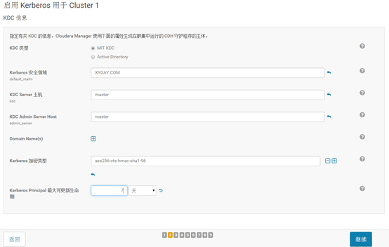
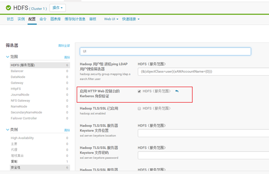
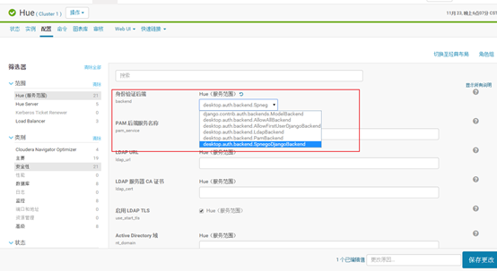

CDH5开启Kerberos认证
文章目录
1. 安装KDC服务
参考KDC安装
2. 拷贝JCE_POLICY文件
将*jce_policy-8.zip*文件解压并拷贝到各节点的*jdk*下的*jre/lib/security*目录下。
例如：
|
|
3. 安装Kerberos客户端
在所有节点上安装*Kerberos*客户端
|
|
4. KDC中创建cloudera-scm管理账户
例如：
|
|
5. 通过向导为集群启用Kerberos
5.1 为集群启用Kerberos
5.2 勾选下列选项
勾选前，请确保已经完成下列选项。如果按照前面步骤进行的，此处可全部勾选。
5.3 设置Kerberos

注意加密类型为aes256-cts-hmac-sha1-96
5.4 KRB5配置
5.5 添加管理员凭证
将前面为cloudera在*KDC*中建立的cloudera-scm账户及密码填上。
5.6 等待运行完成
5.7 指定集群中各服务采用的凭证名称
这里保持默认即可。
5.8 设置DataNode相关端口，准备重启
5.9 等待集群重启完成
6. 创建supergroup用户（非hdfs）
如果是使用*CDH*安装的集群，默认情况下为使用*hdfs*作为超级用户。启用*kerberos*后，建议单独设置一个超级用户。
6.1 配置superuser
选择HDFS服务
进入配置选项
将*supergroup*修改为指定值，如*xygay*。
重启HDFS。
在KDC数据库中添加*superuser*凭证。
7. 为各WebUI启用Kerberos认证
7.1 HDFS的WEBUI启用Kerberos

然后根据提示重启服务
7.2 YARN的WEBUI启用Kerberos
然后根据提示重启服务
7.3 为Hue的UI界面启用Kerberos

然后根据提示重启服务
注意：
重启后，还需要将*hue*的*keytab*文件拷贝到/var/lib/hue/hue.keytab。
* 进入目录*/opt/cm-5.13.0/run/cloudera-scm-agent/process/*下，找到修改时间最近的*HUE_SERVER目录，如/opt/cm-5.13.0/run/cloudera-scm-agent/process/80-hue-HUE_SERVER*。
* 进入该目录将*keytab*文件拷贝到/var/lib/hue/hue.keytab
这步操作完成后需要重启Hue服务。
8. 为各应用单独创建用户
例如，此处单独为云搜索、ETL创建用户。 * 云搜索：cloudsearch * ETL：etl
8.1 KDC中为应用创建用户
8.2 各服务节点上创建用户
除了在*KDC*中添加这两个用户外，还需要在各节点上创建这几个用户。同时*UID*必须大于*1000*。
|
|
8.3 HDFS中为用户添加用户目录
先使用刚才创建的*superuser*进行登陆。
执行下面的命令
|
|
8.4 为各程序应用用户生成keytab文件
注意： > 如果不是应用用户，则不需要生成keytab文件。因为生成了keytab文件，其密码方式就会失效。
|
|
|
|
然后，在当前目录就可以查看到生成的keytab文件。
提示 > xst时使用-norandkey参数可不改变用户原密码来生成keytab文件，具体参考01-KDC安装中创建用户章节，也可以不改变用户密码生成*keytab*文件。
9. 验证*Kerberos*是否生效
- 清除当前用户凭证
执行hadoop命令
1hdfs dfs -ls /执行后报错信息如下：
使用用户登录后再执行
10. 连接Hive
使用*beeline*连接*Hive*时，步骤如下：
* 先使用自己的用户登陆Kerberos客户端，如kinit hive@CDH.COM
* 再输入beeline命令
* 输入!connect jdbc:hive2://dmdb4:10000/default;principal=hive/dmdb4@CDH.COM
提示：
principal=hive/dmdb4@CDH.COM中dmdb4替换为*Hive*服务节点的*HostName*。
文章作者 张雄彪
上次更新 2019-08-25